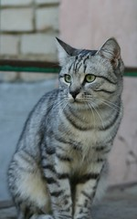
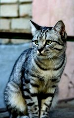
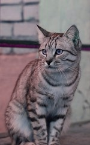
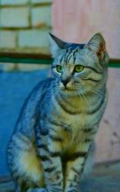
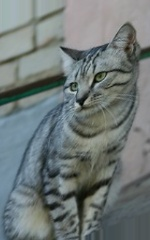

Data Augmentation
Package with data augmentation techiniques to apply to the dataset. Pass them as a list to the argument data_augm in the DataLoader() class. Follow the example below:
from DeepExpressions.train_utils import DataLoader, data_augmentation as daug
daug_list = [
daug.flip_left_right,
daug.flip_up_down,
daug.random_brightness,
daug.random_contrast,
daug.random_hue,
daug.random_jpeg_quality,
daug.random_rotation,
daug.random_saturation,
daug.random_shear,
daug.random_zoom
]
dataset = DataLoader(data_root="...", data_augm=daug_list)
flip_left_right
Flip an image horizontally (left to right).
DeepExpressions.train_utils.flip_left_right(image, label: tuple)
 
This image by Nikita is licensed under CC-BY 2.0
flip_up_down
Flip an image vertically (upside down).
DeepExpressions.train_utils.flip_up_down(image, label: tuple)
This image by Nikita is licensed under CC-BY 2.0
random_brightness
Adjust the brightness of images by a random factor.
DeepExpressions.train_utils.random_brightness(image, label: tuple, max_delta=0.5)
- max_delta: Amount to add to the pixel values.

This image by Nikita is licensed under CC-BY 2.0
random_contrast
Adjust the contrast of an image or images by a random factor.
DeepExpressions.train_utils.random_contrast(image, label: tuple, lower=0.5, upper=2.5)
- lower: Lower bound for the random contrast factor.
- upper: Upper bound for the random contrast factor.

This image by Nikita is licensed under CC-BY 2.0
random_hue
Adjust the hue of RGB images by a random factor.
DeepExpressions.train_utils.random_hue(image, label: tuple, max_delta=0.5)
- max_delta: Maximum value for the random delta.

This image by Nikita is licensed under CC-BY 2.0
random_jpeg_quality
Randomly changes jpeg encoding quality for inducing jpeg noise.
DeepExpressions.train_utils.random_jpeg_quality(image, label: tuple, min_jpeg_quality=5, max_jpeg_quality=25)
- min_jpeg_quality: Minimum jpeg encoding quality to use.
- max_jpeg_quality: Maximum jpeg encoding quality to use.
This image by Nikita is licensed under CC-BY 2.0
random_rotation
Performs a random rotation of a image.
DeepExpressions.train_utils.random_rotation(image, label: tuple, angle=45)
- angle: Rotation range, in degrees.
This image by Nikita is licensed under CC-BY 2.0
random_saturation
Adjust the saturation of RGB images by a random factor.
DeepExpressions.train_utils.random_saturation(image, label: tuple, lower=0, upper=5)
- lower: Lower bound for the random saturation factor.
- upper: Upper bound for the random saturation factor.

This image by Nikita is licensed under CC-BY 2.0
random_shear
Performs a random spatial shear of a image.
DeepExpressions.train_utils.random_shear(image, label: tuple, intensity=45)
- intensity: Transformation intensity in degrees.

This image by Nikita is licensed under CC-BY 2.0
random_zoom
Performs a random spatial zoom of a image.
DeepExpressions.train_utils.random_zoom(image, label: tuple, zoom_range=(0.6, 0.6))
- zoom_range: Zoom range for width and height.
This image by Nikita is licensed under CC-BY 2.0